14 Forest Road Networks using Graph Theory
14.1 Introduction
Roads are a critical element of forest development and are pervasive across much of the landscape. While roads are necessary to provide access to timber for harvesting, they also affect many wildlife, environmental, cultural, and social values. For example, road construction, maintenance, and use can affect water quantity and quality by altering drainage patterns and providing sedimentation inputs into waterways. Many values are affected by the density, placement, traffic level, and permanency of the road network. It is therefore critical that models incorporate road networks that are generated through a robust, consistent, and transparent methodology.
14.2 Creating a road network using graph theory
Creating a connected road network using graph theory involves representing the transportation system as a set of nodes and edges. Nodes typically represent road intersections, junctions, or destinations, while edges represent the road segments connecting them. This abstraction transforms a physical road network into a mathematical graph that can be analyzed efficiently. By treating roads as graph components, researchers and planners can evaluate connectivity, identify critical links, and model traffic movement across a landscape.
The first step in building a connected road network is defining how nodes and edges will be generated from spatial data. Road centerlines are converted into edges, and intersections are converted into nodes where roads meet. Attributes such as road length, travel time, speed limits, or construction costs can be stored as edge weights. These weights allow the graph to capture not only physical connectivity but also the relative difficulty or cost of traversing different routes. Geographic Information Systems (GIS) and network analysis tools are commonly used to create these graph representations from road datasets.
Ensuring network connectivity is a critical objective during graph construction. A connected graph is one in which every node can be reached from every other node through at least one path. Connectivity can be evaluated using graph metrics such as connected components, network density, average path length, and node degree. When disconnected components are identified, additional links can be added strategically to improve accessibility and reduce isolation. This process is particularly important in rural areas, emergency evacuation planning, and infrastructure development where uninterrupted travel is essential.
Once a connected graph has been established, network algorithms can be applied to analyze and optimize road performance. Shortest-path algorithms such as Dijkstra’s or A* can identify efficient travel routes between locations, while centrality measures can highlight roads or intersections that are critical for maintaining network function. Graph-based analyses can also reveal bottlenecks, areas vulnerable to disruption, and opportunities for improving transportation efficiency through new road connections or upgrades.
Graph-based road networks provide a powerful framework for transportation planning, landscape connectivity studies, and infrastructure management. By combining spatial data with graph theory, analysts can quantify connectivity, simulate movement patterns, and evaluate alternative development scenarios. The resulting connected network supports informed decision-making by identifying how changes to individual roads influence accessibility and movement across the entire transportation system.
14.3 Creating a connected road network for forest estate modelling
The following describes a process to generate a vector based connected road network suitable for a Patchworks forest estate model. The markdown describes:
- Creating a simplified and cleaned modelled road network from Integrated Roads dataset using sfnetworks in R
- Creating future roads accessing all of a unit’s THLB using the Forest Road Networks (FRN) plugin in QGIS
- Assembling a Patchwork’s ready network using qgisprocess functions in R
- Implementing the network in a Patchworks model
14.3.1 Creating a simplified network in R
The following code chunk creates a vector connected road network using the sfnetworks package.
The sfnetworks package in R is designed for working with spatial networks by combining sf (simple features) objects with network analysis tools. It allows users to treat geographic features, such as roads or streams, as networks of connected nodes and edges, enabling the analysis of spatial connectivity, centrality, and other network properties within a geographic context.
Key features of sfnetworks include:
Spatial Network Representation: The package allows you to convert spatial objects (like sf line features) into networks, treating each geographic element as either a node (point) or an edge (line). This helps in modelling transport networks, utility networks, and any scenario where geographical connections are important.
Conversion to Network Format: It seamlessly converts sf objects to a tidygraph-based network structure, enabling the use of tidyverse and igraph functions for network analysis. The network can be treated as a graph with nodes and edges, where nodes represent points (e.g., intersections, stations) and edges represent the connecting lines (e.g., roads, paths).
Network Analysis: Once converted into a graph, users can analyze network properties such as node centrality (degree, betweenness, closeness), community detection, shortest path, and more. This is essential for tasks like identifying critical infrastructure, assessing connectivity, or finding optimal routes.
Spatially-Aware Layouts: The package integrates spatial data with network analysis tools, allowing for spatially-aware network visualizations. It supports plotting using tools like ggraph, where the nodes and edges can be positioned based on their geographic coordinates.
Handling Directed and Undirected Networks: Users can work with both directed and undirected networks, depending on the nature of the connectivity in the data (e.g., one-way streets vs. two-way streets).
Integration with Other Spatial Tools: sfnetworks works well in conjunction with other R spatial packages like sf, terra, and raster, providing a comprehensive ecosystem for spatial analysis. It also allows for interactions with QGIS via qgisprocess for further spatial operations.
Using sfnetworks the following code chunk processes and analyzes a road network
dataset. It begins by reading in road data from a
geodatabase, cleaning and filtering it to remove irrelevant fields and
certain road classes. The data is then converted into a line network and
transformed into an undirected graph using the sfnetworks package.
After simplifying the network, the script identifies the network’s
connected components and selects the largest component. Degree
centrality is calculated for each node in the network to assess the
importance of nodes based on their direct connections, and this is
visualized using a plot. The average degree of each edge is computed and
visualized as well. Finally, the network is reclassified, cleaned
geometrically using QGIS, and saved as a new GeoPackage file for further
use.
library(sfnetworks)
library(sf)
library(terra)
library(tidygraph)
library(igraph)
library(ggplot2)
library(qgisprocess)
library(ggraph)
library(dlookr)
library(glue)
library(janitor)
path2rd <- ".\\data\\WL\\tsa41_2024.gdb"
#get integrated roads linework
rds <- st_read(path2rd, layer = "IntegratedRoads")
plot(st_geometry(rds))
#dump extraneous fields, clean field names and remove trails
rds<-rds%>%select(
DRA_ROAD_CLASS,
INTEGRATED_ROADS_ID,
Integrated_Road_Class_Num,
Integrated_Road_Class_Descr
)%>%
clean_names()%>%
filter(integrated_road_class_num != 5)
###### convert from multiline for sfnetworks and dump any empty linework
rds <- st_cast(rds, "LINESTRING")
rds <- rds %>% filter(!st_is_empty(.))
###### convert to undirected network
rd_net <- as_sfnetwork(rds, directed = FALSE)
#### visualize
#plot(st_geometry(rd_net, "nodes"), pch = 5, cex = .2, add = TRUE)
# simplify: reduce the number of pseudo-nodes
# simplify and create .tidygraph_node_index
simple_net_smooth <- convert(rd_net, to_spatial_smooth)
# create a membership list to identify primary components
components_result <- components(simple_net_smooth)
# create component table to review
# table will itemize disconnected components within network and assign
# membership id to each connected subnetwork
#
component_tibble <- tibble(
node = 1:length(components_result$membership),
membership = components_result$membership,
csize = components_result$csize[components_result$membership]
) %>%
arrange(desc(csize))
View(component_tibble)
# Identify primary components....any member with more that 50 components
members <- component_tibble %>%
group_by(membership) %>%
summarise(size = mean(csize))%>%
arrange(desc(size))
View(members)
### select the subnet with the largest membership
p <- simple_net_smooth %>%
activate("nodes") %>%
filter(components(simple_net_smooth)$membership == 1)
#####################################################################################
#The centrality_degree() function comes from the tidygraph package (which powers sfnetworks)
#and is used to calculate degree centrality for each node in a graph.
#Degree centrality measures how many direct connections (edges) a node has.
#In an undirected graph like "p" it counts all edges connected to a node.
p<- p %>%
activate(nodes) %>%
mutate(degree = centrality_degree())
coords <- st_coordinates(p %>% activate("nodes"))
#layout = coords is now set to a matrix of node coordinates extracted from the network.
#When using ggrpah this approach ensures nodes are plotted based on their
#spatial positions without passing unsupported arguments.
#geom_node_point(aes(colour = degree)) maps node colour to the degree column.
# Plot
ggraph(p, layout = coords) +
geom_edge_link(color = "gray80") +
geom_node_point(aes(color = degree), size = 1) +
scale_color_viridis_c(option = "plasma") +
theme_graph() +
labs(color = "Node Degree")
# Compute average degree for each edge
p <- p %>%
activate(edges) %>%
mutate(
avg_node_degree = (.N()$degree[from] + .N()$degree[to]) / 2
)
#plot edges
ggraph(p, layout = coords) +
geom_edge_link(aes(color = avg_node_degree), width = 1) +
scale_color_viridis_c(option = "plasma") +
theme_graph() +
labs(color = "Edge Value")
#convert to sf_object
p<-p%>%
activate("edges")%>%
st_as_sf()
#reclassify
p<-p%>%
mutate(class = case_when(
avg_node_degree < 3 ~ "secondary",
TRUE ~ "primary"
))
#dump index list and old fid field to covert to .gpkg
p<-p%>%select(-.tidygraph_edge_index)
#output geopackage path
out_path<-"./data/WL/tsa41_network1.gpkg"
#clean the linework using QGIS fix geometry function
clean<- qgis_run_algorithm(
"native:fixgeometries",
INPUT = p,
OUTPUT =out_path )
tmp1 <- read_sf(qgis_extract_output(clean, "OUTPUT"))#clean
st_write(p,"./data/WL/tsa41_network1.gpkg",
overwrite = TRUE,
append = FALSE
)
#remove large objects and clean garbage
rm(tmp1)
rm(p)
gc()The following image contrasts the integrated roads (green) overlain with the simplified modelled network (black) for TSA41
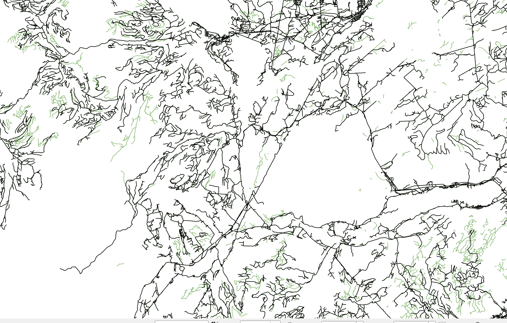
The cleaning and simplification process significantly reduces the total number of edges and nodes and orphaned segments from the source integrated roads. The modelled network linework is later supplemented with future roads connecting the modelled network to all portions of the THLB
14.3.2 Creating Future Roads
To create the future road vector linework the process employs the Forest Road Network plugin in QGIS. Unfortunately, the FRN plugin cannot be accessed programatically in R through qgisprocess (which is an R/QGIS interface) and therefore requires manual processing in QGIS. The plugin contains several algorithms designed to help the user create an optimized forest road network, based on the topography of the landscape. The user must first create or input a “cost map”, which describes the cost of construction of a road on a pixel. Then, different algorithms allows the user to create the road network, then simulate the fluxes of wood going through it (transport via timber trucks), then decide the width and type of each road segment according to this flux.
The plugin can be downloaded from here
The plugin contains four features:
- An algorithm to help the user to create a cost raster that is used afterwards to compute the path of the forest road network
- An algorithm that creates the path of the forestroad network in space
- An algorithm that determine how the wood will flow through the created forest road network
- An algorithm that will determine the type of each forest road (primary, secondary, tertiary,temporary/winter roads, etc.) according to the wood flux data
This process uses the second algorithm titled “Forest Road Network Creation”
This algorithm builds a forest road network using several inputs: a cost raster, which shows how expensive it is to build a road on each pixel; polygons that represent harvested areas; and lines that show the existing road network, which the new roads must eventually connect to. The algorithm also follows a heuristic, which determines the order in which roads are created. It can optionally consider the angle of travel between pixels to avoid sharp turns, although this feature is still experimental. The heuristic works by breaking the overall problem of creating an optimized forest road network (called the Multiple Target Access Problem, or MTAP) into smaller, manageable pieces (Single Target Access Problems, or STAPs) and solving them in the order specified by the heuristic. This approach is similar to the method used by professional software such as REMSOFT Road Optimizer
For this process the required cost raster is generated using STSM, the “harvest blocks” are represented by THLB polygons above or equal to a minimum size threshold and the current road network uses the simplified connected network previously generated (the default is 5 ha).
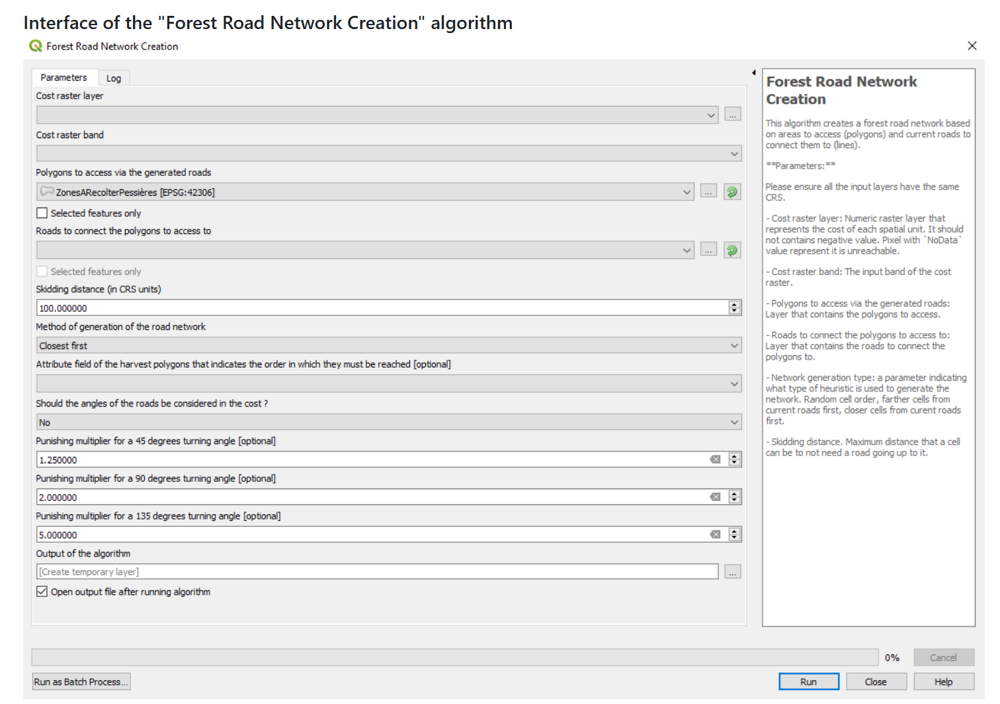
The beyond the spatial the FRN interface requires the following parameters:
- skidding distance: 500m (reduce if greater density is desired)
- method of generating: Random
- all other parameters: use the default
Generating the spatial inputs uses the qgisprocess package. The goal of qgisprocess is to provide an R interface to the geoprocessing algorithms of QGIS, a popular and open source desktop geographic information system (GIS) program.
#####################create FRN inputs############################################
#start with THLB...it may take many forms so you need to adjust the scripts accordingly
# we want to build road to THLB polygons > 5 ha
#this example uses a gridded THLB
t_path<-'./data/WL/tsa41_thlb.gpkg'
out_path<-'./data/WL/tsa41_thlb_clean5.gpkg'
thlb<-st_read(t_path)
# raster example
# thlb<-rast(t_path)
# thlb<-as.polygons(thlb,aggregate = TRUE)
# thlb<-as_sf(thlb)
thlb<-thlb%>%filter(THLB > 0)
#
#extract just THLB polygons (this is gridded)
# extract<-qgis_run_algorithm(
# "native:extractbyattribute",
# INPUT = thlb,
# VALUE = 'Y',
# FIELD = 'thlb')
# tmp1 <- read_sf(qgis_extract_output(extract, "OUTPUT"))#clean
tmp1<-thlb
rm(thlb)
gc()
#since its gridded we need to dissolve into large polygon
#ne disjoint to avoid multipart polygons
tmp1<-tmp1%>%
mutate(grid = 1)
# use the QGIS dissolve function
dissolve<- qgis_run_algorithm(
"native:dissolve",
INPUT = tmp1,
FIELD = "grid",
SEPARATE_DISJOINT = 1,
OUTPUT = out_path
)
#create sf object
tmp1 <- read_sf(qgis_extract_output(dissolve, "OUTPUT"))#dissolve
#polygons 5 ha or greater
tmp1<-tmp1 %>%
mutate(area_ha = st_area(geom)/10000)%>%filter(
as.numeric(area_ha) > 4)
#QGIS fix geometry function
clean<- qgis_run_algorithm(
"native:fixgeometries",
INPUT = tmp1,
OUTPUT =out_path )
#function writes tmp1 to disk
tmp1 <- read_sf(qgis_extract_output(clean, "OUTPUT"))#clean
plot(tmp1)
##############retrieve and update Cost Surface#############################
bnd<-st_read(path2rd, layer = 'bnd')
cost_path<-'./data/WL/AccessCostSurface.tif'
ras<-rast(cost_path)
### crop to boundary of unit####################################################
crs(ras)<-"epsg:3005"
x<-crop(ras, bnd)
x<-mask(x,bnd)
## create numeric raster of cost####################
#FRN requires floating point raster but STSM raster is integer so add numeric scale ()
z<-x*10.1
writeRaster(z,
'./data/WL/tsa41_cost.tif',
datatype = "FLT4S",
overwrite = TRUE)The following image depicts the modelled road network (black) and the FRN future roads (red) connecting the total network to the THLB (green) for TSA41.
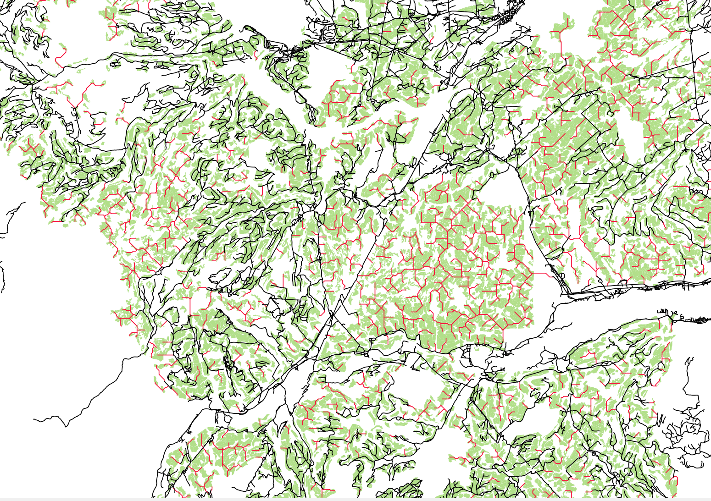
14.3.3 Create Patchworks-Ready Road Network
The following code chunk processes the forest road network (FRN) output
derived from QGIS and combines it with the existing simplified connected
network to create a unified, classified network for Patchworks. First,
the script performs a snapping operation using QGIS’s
snapgeometries algorithm to ensure that the FRN aligns with the
existing network (tsa41_network1.gpkg), using a tolerance value of
99.9. After snapping, the FRN is merged with the existing network
through the mergevectorlayers algorithm. The merged network is then
dissolved based on a new grid field, which simplifies the network
by removing unnecessary boundaries between adjacent features. The final
cleaned network is written to a new GeoPackage. Once the data is
prepared, the script converts the cleaned road network into a graph
format using sfnetworks, where it’s simplified to reduce the number of
pseudo-nodes. Connected components of the network are identified, and
the primary components (those with more than 50 members) are isolated.
The degree centrality of nodes in the primary network is computed, and
visualizations of node and edge properties (such as degree and average
node degree) are generated using ggraph. The network is then
reclassified into “primary” and “secondary” categories based on the
average node degree.
After preparing the primary road network, the script continues with
further simplification and densification of the road geometries
using QGIS tools. The simplifygeometries algorithm reduces the number
of vertices in the network to simplify the geometry, followed by the
densifygeometriesgivenaninterval algorithm, which densifies the
network at 100-meter intervals to ensure adequate detail. The road
network is then classified based on whether it intersects with buffered
roads from the original dataset. This classification labels roads as
either “current” (those intersecting the buffered areas) or “future”
(those that do not). Finally, the script visualizes the reclassified
network using ggplot and exports the resulting data to a new
GeoPackage for Patchworks deployment
#####Step 3:
#################################################################################
####################Bring Network Together#######################################
################################################################################
#SNAPPING
x<-("./data/WL/FRN.gpkg")
y<-("./data/WL/tsa41_network1.gpkg")
#qgis_show_help("native:snapgeometries")
snap<- qgis_run_algorithm(
"native:snapgeometries",
INPUT = x,
REFERENCE_LAYER = y,
TOLERANCE= 99.9
)
tmp1 <- read_sf(qgis_extract_output(snap, "OUTPUT"))#clean
tmp1
write_sf(tmp1,"./data/WL/tmp1.gpkg",
overwrite = TRUE)
#Merge Layers
#View(qgis_search_algorithms(algorithm = "merge", group = "[Vv]ector"))
#check help for parameter values
#qgis_show_help("native:mergevectorlayers")
merge<- qgis_run_algorithm(
"native:mergevectorlayers",
LAYERS = c("./data/WL/tmp1.gpkg",
"./data/WL/tsa41_network1.gpkg")
)
tmp1 <- read_sf(qgis_extract_output(merge, "OUTPUT"))#merge
write_sf(tmp1,"./data/WL/tmp1.gpkg",
overwrite = TRUE)
#dissolve
tmp1<-tmp1%>%mutate(
grid = 1
)
#check help for parameter values
qgis_show_help("native:dissolve")
outpath<-"./data/WL/tsa41_network_clean.gpkg"
dissolve<- qgis_run_algorithm(
"native:dissolve",
INPUT = tmp1,
FIELD = "grid",
OUTPUT = outpath
)
tmp1 <- read_sf(qgis_extract_output(dissolve, "OUTPUT"))#dissolve
tmp1
plot(st_geometry(tmp1))
####################################rerun network##############################
###############################################################################
################################################################################
path2rd <- ".\\data\\WL\\tsa41_network_clean.gpkg"
#st_layers(path2rd)
rds<-st_read(path2rd)
###### convert from multiline for sfnetworks
rds <- st_cast(rds, "LINESTRING")
###### convert to undirected network
rd_net <- as_sfnetwork(rds, directed = FALSE)
# simplify: reduce the number of pseudo-nodes
# simplify and create .tidygraph_node_index
simple_net_smooth <- convert(rd_net, to_spatial_smooth)
# create a membership list to identify primary components
components_result <- components(simple_net_smooth)
# create component table to review
# table will itemize disconnected components within network and assign
# membership id to each connected subnetwork
#
component_tibble <- tibble(
node = 1:length(components_result$membership),
membership = components_result$membership,
csize = components_result$csize[components_result$membership]
) %>%
arrange(desc(csize))
View(component_tibble)
# Identify primary components....any member with more that 50 components
members <- component_tibble %>%
group_by(membership) %>%
summarise(size = mean(csize))%>%
arrange(desc(size))
View(members)
### create a list of sub-setted networks based on component membership
p <- simple_net_smooth %>%
activate("nodes") %>%
filter(components(simple_net_smooth)$membership == 1)
p<- p %>%
activate(nodes) %>%
mutate(degree = centrality_degree())
coords <- st_coordinates(p %>% activate("nodes"))
# Plot
ggraph(p, layout = coords) +
geom_edge_link(color = "gray80") +
geom_node_point(aes(color = degree), size = 1) +
scale_color_viridis_c(option = "plasma") +
theme_graph() +
labs(color = "Node Degree")
# Compute average degree for each edge
p <- p %>%
activate(edges) %>%
mutate(
avg_node_degree = (.N()$degree[from] + .N()$degree[to]) / 2
)
#plot edges
ggraph(p, layout = coords) +
geom_edge_link(aes(color = avg_node_degree), width = 1) +
scale_color_viridis_c(option = "plasma") +
theme_graph() +
labs(color = "Edge Value")
#convert to sf_object
p<-p%>%
activate("edges")%>%
st_as_sf()
#reclassify
p<-p%>%
mutate(class = case_when(
avg_node_degree < 3 ~ "secondary",
TRUE ~ "primary"
))
#dump index list and old fid field to covert to .gpkg
p<-p%>%select(-.tidygraph_edge_index)
st_write(p,"./data/WL/tsa41_total_network_class.gpkg",
overwrite = TRUE,
append = FALSE
)
##################################################################################
#make Patchworks ready: Simplify , Densify and Classify
#######################Make Patchworks ready######################################################
#Using QGIS simplify the line work to initially reduce the number of vertices
#Then densify the vertices at 100 metre intervals
in_path<-"./data/WL/tsa41_total_network_class.gpkg"
#qgis_show_help("native:simplifygeometries")
out_path<-"./data/WL/tsa41_total_network_class_simp10.gpkg"
simple<- qgis_run_algorithm(
"native:simplifygeometries",
INPUT = in_path,
TOLERANCE = 10,
OUTPUT = out_path
)
p_view <- read_sf(qgis_extract_output(simple, "OUTPUT"))
#View(qgis_search_algorithms(algorithm = "densify", group = "[Vv]ector"))
#qgis_show_help("native:densifygeometriesgivenaninterval")
out_path<-"./data/WL/tsa41_total_network_class_simp10_dens100.gpkg"
densify<- qgis_run_algorithm(
"native:densifygeometriesgivenaninterval",
INPUT = p_view,
INTERVAL = 100,
OUTPUT = out_path
)
p_view <- read_sf(qgis_extract_output(densify, "OUTPUT"))
p_view
path2rd <- "./data/WL/tsa41_2024.gdb"
rds<-st_read(path2rd,layer = "IntegratedRoadsBuffers")
# Convert MULTISURFACE -> MULTIPOLYGON (required for spatial ops)
rds_poly <- rds %>%
st_cast("MULTIPOLYGON", warn = FALSE)
# Determine which network edges intersect buffered roads
intersects_buffer <- lengths(st_intersects(p_view, rds_poly)) > 0
# Add classification field
p_view <- p_view %>%
mutate(status = ifelse(intersects_buffer, "current", "future"))
# Summary check
table(p_view$status)
# Optional visualization
ggplot() +
geom_sf(data = p_view, aes(color = status), size = 1) +
geom_sf(data = rds_poly, fill = NA, color = "black", linetype = "dashed") +
theme_minimal()
table(p_view$class)
st_write(p_view,".\\data\\WL\\tsa41_total_network_class_simp10_dens100_reclass.gpkg")14.3.3.1 Implement in Patchworks
This basic road set-up in Patchworks will allow the model to track (and control) the length of new roads built each period. This is often incorporated into models in order to produce a block pattern that initially builds near existing roads, avoiding a scattered pattern across the land base. Hauling, maintenance, road density and mill target functionality can be incorporated into Patchworks, but are more project-specific and therefore are not included in this basic set-up.
In addition to your input Patchworks blocks shapefile, you will have two other spatial layers to start with:
- Mills/sinks. This will be either provided with the FAIB roads, or you could clip appropriate mills from the standard layer of Timber Processing Facilities (found here: https://catalogue.data.gov. bc.ca/dataset/british-columbia-major-timber-processing-facilities).
- FAIB roads. This is a fully connected network of cleaned existing roads and projection future roads, based on a R/QIS process (tsaXXX_total_network_class_simp10_dens100_reclass.gpkg).
The following steps should be run in the order listed. Each is described in more detail below:
- Run ‘1_add_fields.R’: This reads in the roads and mills layers (gpkg), adds/calculates the fields needed for Patchworks and saves out shapefiles.
- Run the Patchworks ‘Build Road Segments application’. This creates the files needed for the network patchworks model.
- Run ‘2_filter_linkages.R’: This updates the linkage file to only join stands with THLB to roads. For large models, this saves on model size and memory overhead.
- Update the pin file to include the lines necessary to incorporate the new road network.
- QA the road model, add ‘3_mapLayers_roads.bsh’ to help with checking for connectivity etc. and
- Add sensitivities to explore how limiting road length built affects harvest level and patterns.
14.3.3.1.1 Step 2: Run the ‘Build Road Segments’ tool
This step creates the files needed for the road model in Patchworks.
From the Application launcher, double click on the ‘Build Road Segments’ application.
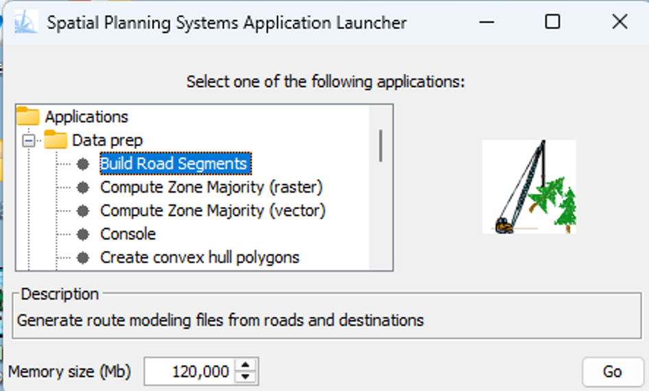
On the next screen, point to the project blocks shapefile, and the road and mill (sink) shapefiles that were made in Step 1.
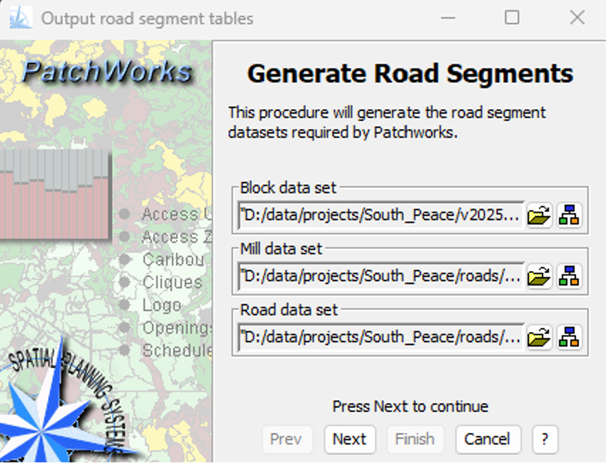
In the following screens, for ‘Block label’, choose the correct unique stand identifier used in your Patchworks model (sometimes stand, maybe unique_id, maybe gr_skey?). Otherwise use the following defaults as a starting point.
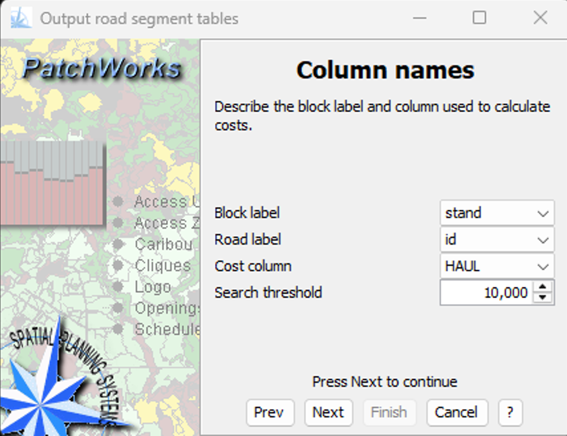
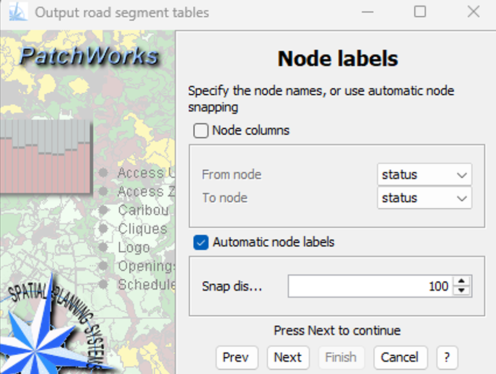
Choose the ‘roads’ folder located within the Patchworks analysis folder structure as your output directory. At this point it is good practice to save a text file with the variables that you have chosen. That way if you ever need to go back and tweak parameters, you won’t have to rely on your memory as to what you did. You can do this by clicking on the ‘Show code’ button and saving the text file.
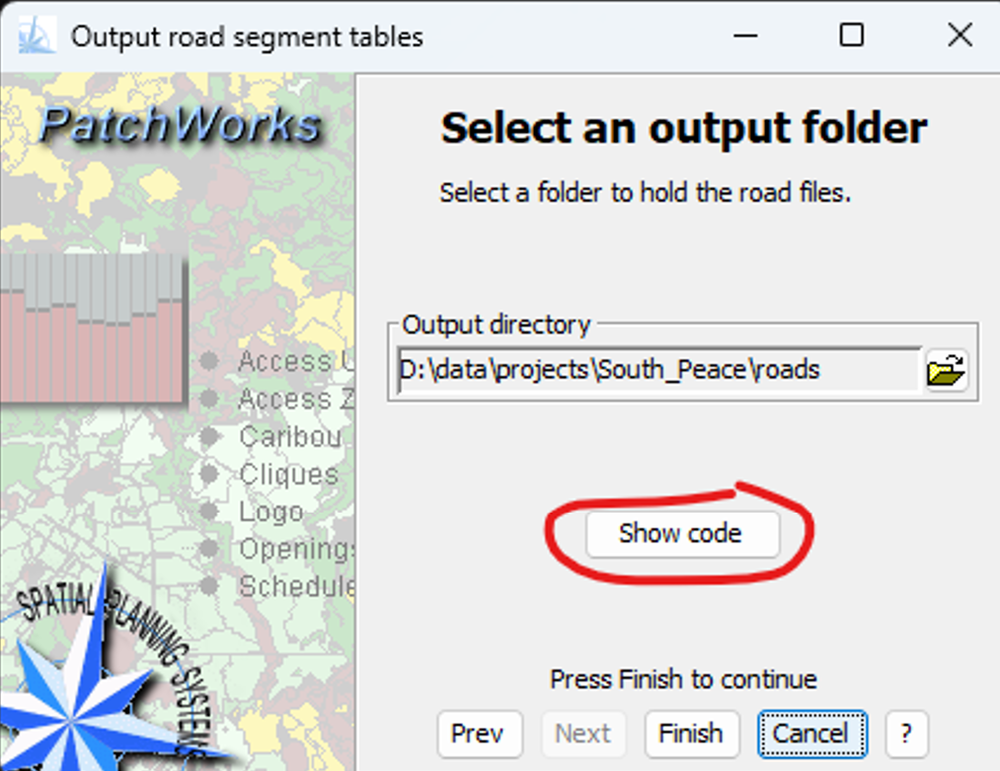
Then click ‘Finish’ and the road segment tool should work away. There will be output in the black processing screen, similar to the screenshot below. There may be some warnings that it couldn’t find roads near to block ‘x’. This means that given the ‘search threshold’ distance defined above (10,000 m in this case), there were no future/existing roads within this distance. While this may prompt you later to go back and fix something (e.g. generate more roads, increase the search threshold), for now you can ignore this warning and wait to diagnose the cause in the QA step. In this example, all blocks that had this warning were up in the high reaches of a watershed and were all non-THLB – i.e. there shouldn’t be a road nearby.
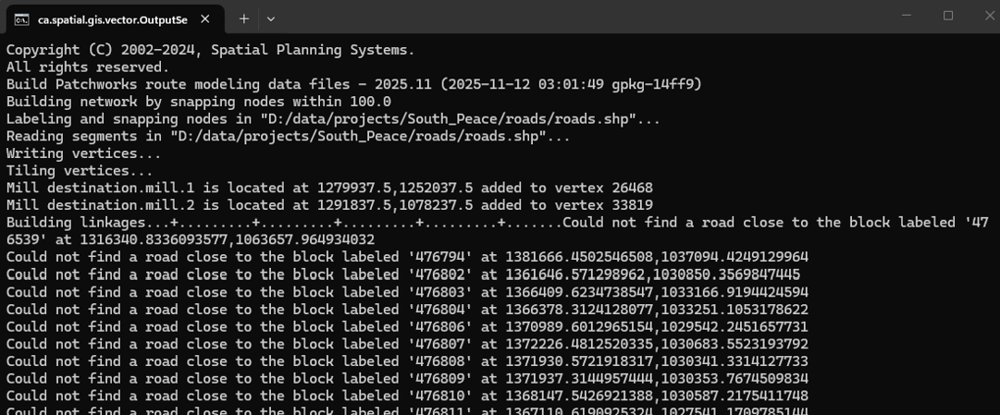
After this tool has run, you will see the following csv files in the ‘roads’ folder – these are the main files for the Patchworks road model.
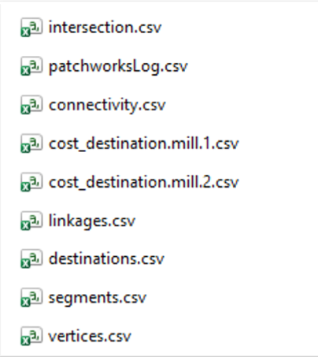
14.3.3.2 Step 3: Run ‘2_filter_linkages.R’
The linkages file lists which vertex (end of road segment) each block is linked to. This code updates the linkage file to only join stands with THLB to roads. For large models, this saves on model size, memory needs, and run speed. It will create a file called ‘linkages_thlb.csv’.
## After the Patchworks road builder is run, filter the linkage file for just the THLB
rm(list=ls())
# Read in linkages.csv file
link <- read.csv("linkages.csv")
# Read in THLB
thlb <- read.csv("../tracks/blocks.csv") # ../v20251217/tracks/v07
thlb <- thlb[thlb$TYPE=="managed",]
# filter linkages to where there is a managed block (inner join)
link2 <- merge(link, thlb, by = "BLOCK")
link2 <- link2[c("BLOCK","NODE")]
# print out the filtered linkages file
write.csv(link2, file="linkages_thlb.csv", row.names=FALSE)14.3.3.3 Step 4: Update the pin file
Update the pin file to include the lines necessary to incorporate the new road network. There is code to add/confirm in 3 places in the pin file.
Firstly, there will usually be a Boolean near the top of the pin file that you can use to turn roads on or off. Add this line or switch it to ‘true’. If you prefer to be prompted by a pop-up every time you load the pin file, you can use the second example.
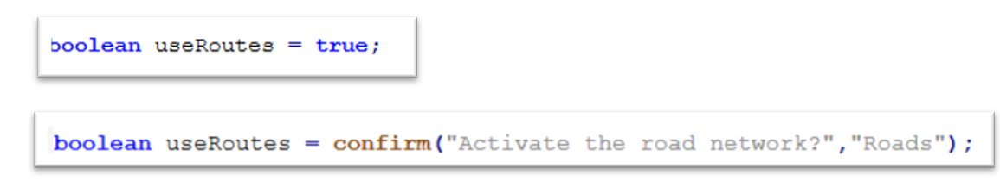
Secondly, also near the top of the pin file (usually just after where you point to the files in the tracks folder), add or confirm that this section of code is in place and that the names line up. This points Patchworks to the files that you made in the last few steps. Note that this section is wrapped in the useRoutes Boolean.
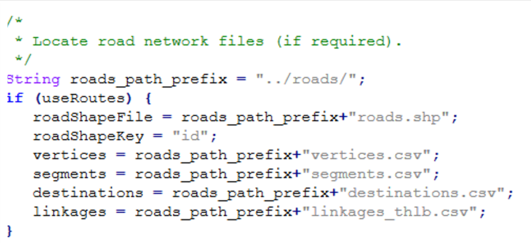
The third piece of code should be inserted at the bottom of the “Patchworks_TargetInit()” section. This part sets up accounts to track volume and cost of delivering wood to each mill. In this basic setup, we are only concerned about road building costs – which in this case are a proxy for road length (since we set build cost equal to road length in 1_add_fields.R). You will need to update “product.Yield” to whatever your volume variable is called in your model. Update the “i” variable in the for loop to reflect how many mills you have in your project area. This creates an account called “route.total.build” that can be used later to limit the length of new road built in each period (see step 6).
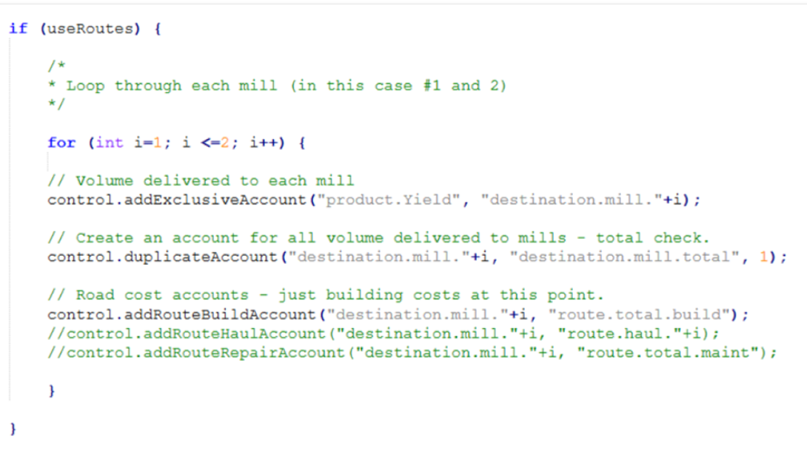
Once the pin file is complete, try loading your model! Work through any errors or warnings during loading. Once the loader gets to the ‘linkages’ section, you should expect to see a warning pop up as below. This is expected, since we filtered the road network only to link to blocks that have a THLB area. Check that the warning indicates “(0 managed)”, it is a problem if there are managed blocks that are not connected.
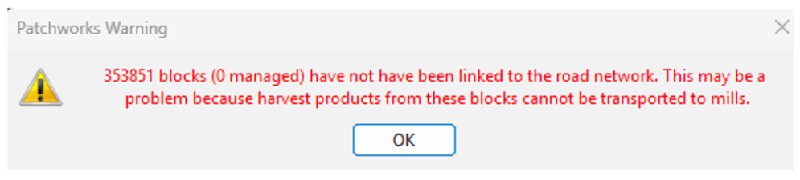
14.3.3.4 Step 5: QA the road model
There are a number of things that we need to check to make sure that the network model is working properly: • Every managed block is joined to a vertex (blocks connected to roads), • Every road is connected to a mill (roads connectivity), • Every managed block is connected to a mill, • Volumes are flowing through the network, • Check that the building cost is 0 for existing roads and > 0 for future roads, and • Check that all volume harvested flows to a mill.
We will use a combination of map layers and queries within Patchworks to check these elements. Open up the Patchworks Console and run “mapLayers_roads.bsh”. This script creates standard map layers for checking the road network. Depending on the naming conventions that you used in your project, you may have to update some lines in this file (e.g. number of mills, location of the roads/mills shapefile, the name of your volume variable). There are more details on each check below.
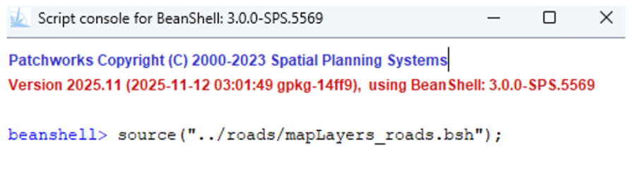
14.3.3.4.0.1 Every managed block is joined to a vertex
The map titled “Check 1: is the block joined to a vertex?” creates a map that will show you if there are any unconnected blocks. All blocks with a THLB should show as connected and all blocks with no THLB should be unconnected. To help identify unconnected THLB stands, you should also use the query “(VERTEX = ’’) AND (MANAGEDAREA > 0)” on the blocks table, and confirm that there are no records selected. If there are any managed blocks not connected, you have a few options to go back and fix things: 1. Get the FAIB road network re-made, so that future roads are built into the areas with unconnected blocks. Depending on your THLB definition/model formulation, the process may have to be re-run with a lower (or 0) minimum THLB size threshold or a lower skid distance. At this time, the defaults are minimum THLB >= 5 ha and 500m skid distance. 2. Increase the ‘search threshold’ in the ‘Build Road Segments’ tool. This defines the distance that Patchworks scans around each block to find the nearest road. If it is just a few scattered managed blocks that are not joined, then this is a good option. The default at this time is 10,000m (or 10km).
14.3.3.4.1 Every road is connected to a mill
The map titled “Check 2: roads connected to mill 1” creates a map that will show you if there are any unconnected roads. Note that this example just checks the connection to mill 1 because the assumption is that the network is connected enough to get from mill 1 to any other mills, but you could duplicate this piece of code for each mill to be sure. If there are chunks of the road network that are unconnected, you will see them themed on the map. You can also query the routes table. From the Patchworks main screen, go View -> Show ‘Routes to destination.mill.1’ table and scroll across to the ‘DISTANCE’ field. Sort it from smallest to largest or query where ‘DISTANCE <= 0’ to highlight any unconnected roads. If there are chunks of the road network that are unconnected, you will need to go back to the source shapefile and fix the connectivity.
14.3.3.4.2 Every managed block is connected to a mill
This is a combination of the above two checks and make sure volume from each managed stand can be sent to a mill. As with the one above, we have focused on mill 1, but you could duplicate this piece of code for each mill. If the other two checks show everything connected, this one should be fine also. The map titled “Check 3: blocks connected to mill 1” creates a map that will show you if there are any unconnected blocks. You can also identify these stands by querying the blocks table where “(destination.mill.1.haul = 0) AND (MANAGEDAREA > 0)”. This query works because we set haul cost = 1 in “1_add_fields.R”. If there are managed blocks that are not connected to a mill, use the maps to identify why and refer to the fixes listed in the previous two steps.
14.3.3.4.3 Volumes are flowing through the network
We use a few spot checks to visually confirm that harvest volume is flowing through the network from a stand to mill. The map titled “Check 4: Volume flow to mill 1” creates a map that will show the route the volume travels. To use this map, scroll to period 1, manually harvest a block in period 1 (right click -> View and edit treatments -> right click in the ‘Managed’ box in period 1 -> select the ‘cc’ treatment) and look to see if there is a highlighted route to a mill on the map. You will have to refresh the map for the highlighted route to show up. Note that if a stand is closer to mill 2, you may have to duplicate this layer for mill 2 instead. In the example screen shot below, the route to mill 1 (red dot) is highlighted from the harvest block (in pink on the right-hand side). It is a good idea to do a few of these spot checks from around the land base.
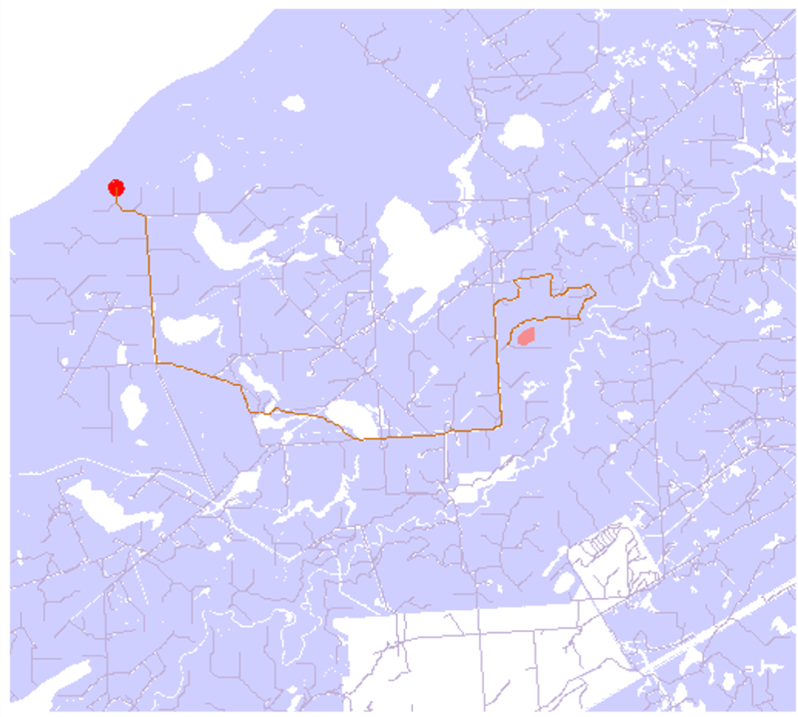
14.3.3.5 Check build costs
We want to double-check that the build cost is 0 for existing roads and > 0 for future roads in Patchworks. This can be done via a summary of the network table. Go to View -> Show ‘Network’ table. Use the ‘Summarize values’ tool to summarize build cost by existing/future road status. If it is correct, the total BUILD should be 0 in the ‘ext’ category.
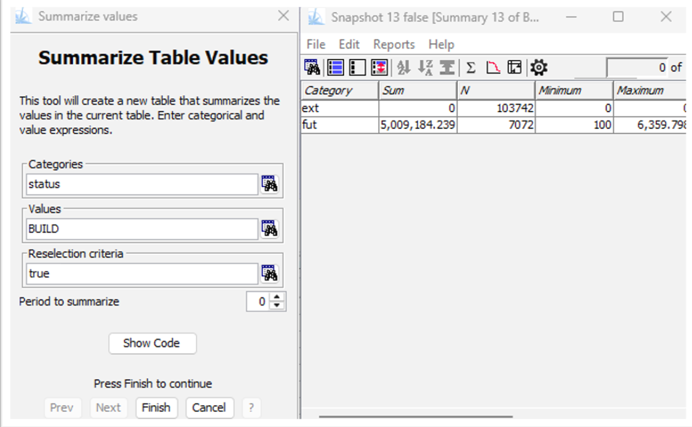
14.3.3.6 Check that all volume harvested flows to a mill
We want to check that all the volume that is harvested is going to a mill (i.e. that the totals line up without a deficit or surplus). To do this either put in a dummy harvest volume target and let the scheduler run for a minute, or load a previously saved scenario – so that there is a substantial volume being harvested. Then check that the product.Yield account (or whatever it is called in your model) matches with the destination.mill.total account. Any lower and you are missing some connection in the road model and any more and you may have duplicates.
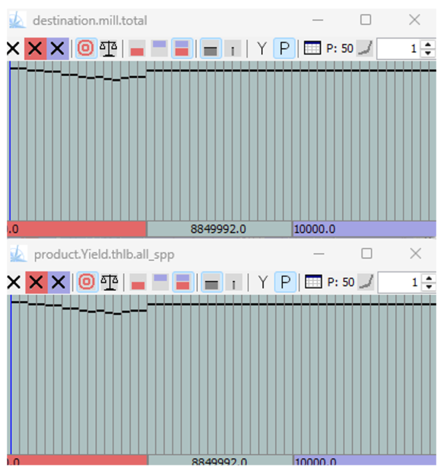
14.3.3.7 Step 6: Limit road build length
The last step is to carry out some sensitivity analyses to explore how limiting road length built affects harvest level and patterns. This will likely take more than one sensitivity. In the scenarioSet.bsh, set up a new scenario to run and add a limit to how much new road can be built per period using something like the following code (which would be saved in the targetDescription.bsh. In this example, the first argument passed is the ‘maximum length of road to be built per period’ and the second argument is the weighting. In order for it to be adhered to in the model, make sure the weighting is above product.Yield in the performance table.
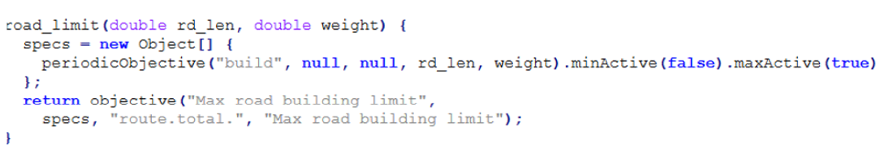
A common question might be what number to use for the road building limit, and while this is project specific, there are a few sources of potential information: • If your project area has good or semi-complete data on rates of historic road building, you can summarize and generalize the average roads built per year. Note that the Integrated Roads layer only has incomplete date fields that would be hard to glean a reliable number from. • Get a realistic ballpark from regional/operational contacts. • Look at an existing scenario and find how many years it takes to transition into managed stands. If we assume that all roads should be built out by then, divide the length of future roads by the number of years to get an average that needs to be built each year. • If there is a parallel STSM model with road building integrated, you could summarize and mimic the length of roads built from that model. We want the road building limit to reflect realistic harvest patterns while not being unrealistically/overly restrictive on the harvest level, so it may take a few iterations to find an acceptable balance in the model.
You can use the ‘Comparison reports’ functionality to compare between scenarios. We would expect that without a road building limit, the harvest pattern is more scattered with regards to distance from road and road building would spike in the first period. With a road building limit, this should be more controlled, as shown in the comparison report below.
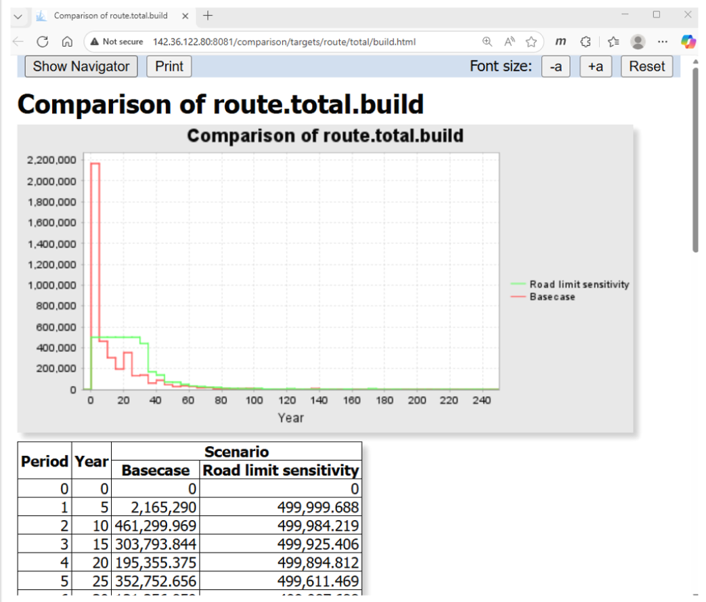